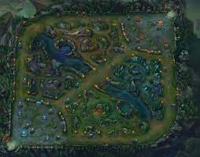

Summoner's Rift
The map was given a graphical and technical update on May 23rd, 2012 and remade from scratch on November 12th, 2014. Seasonal updates would change parts of the map to incorporate new gameplay features.
The objective of Summoner's Rift is simple – destroy the enemy nexus. In order to do this, champions must traverse down one of three different paths (or lanes) in order to attack their enemy at their weakest points they can exploit. Both teams have their lanes defended by numerous turrets; each turret grows in strength the closer it gets to its respective nexus and each turret must be eliminated in order to gain access to the next turret in that lane. Cooperating with fellow summoners is an absolute requirement for success, as it is easy for a champion to find themselves ambushed by enemies in the lanes of the Rift.
ARAM

All Random All Mid (ARAM) was originally played as a custom game on the Summoner's Rift map. Many players enjoyed the gameplay change, focusing only on 5v5 fights with no lane phase or jungling. A small community of players crafted a set of standard rules for this type of game. ARAM quickly became the most popular type of custom game and the community vocally asked Riot to formally support the game mode. After some time, the Proving Grounds map was revamped from being solely for tutorials, to a playable one lane map. Later, the Howling Abyss was released as a new ARAM map, replacing the Proving Grounds, along with the Freljord update and ARAM was was made an official queue. This was the first and only time a custom game mode created by players became an official game type of League of Legends.
The objective of Summoner's Rift is simple – destroy the enemy nexus. In order to do this, champions must traverse down one of three different paths (or lanes) in order to attack their enemy at their weakest points they can exploit. Both teams have their lanes defended by numerous turrets; each turret grows in strength the closer it gets to its respective nexus and each turret must be eliminated in order to gain access to the next turret in that lane. Cooperating with fellow summoners is an absolute requirement for success, as it is easy for a champion to find themselves ambushed by enemies in the lanes of the Rift.
TFT
Teamfight Tactics ( Master Tactics in EUW) or TFT is an auto-battle game mode. It was first introduced on June 10, 2019, became available on the PBE on June 18, 2019, and was released on the live servers on June 25-28, 2019.
Teamfight Tactics is an autobattler: a round-based PvP game where you’ll draft a team that battles automatically on your behalf. If you've never played an autobattler before, don't worry! TFT borrows from many of the concepts you know and love about other strategy games, like drafting from a shared pool of resources, team building, economy management, and positioning. Here's how it works: Individuals face off in 1-on-1 matches until only one player remains. You win by drafting the best team of champions from a shared pool, equipping them with powerful items, managing your gold income to buy out the competition, and positioning your team in winning battle formations. There are unlimited winning strategies, so you’ll have to adapt to different situations in every game to come out on top.